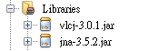
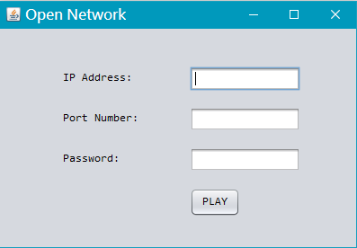
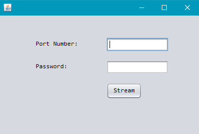

即時視訊串流加解密的服務品質與效能測試
1、
專題概述
此次專題製作是以加密影片為主軸，並且能透過網路傳遞。加密方式以XOR運算的方法，而網路傳遞以檔案方式傳送，最後能製作出簡單加解密播放程式。
2、
製作工作
2.1 播放器製作
要求:
l 安裝VLC Player，32位元版本需用32位元JDK製作，64位元版本需用64位元JDK製作[1]。
l 使用NetBeans[2]環境開發
l 使用VLCJ[3]來連結播放器函示庫
l 下載Google提供的vlcj.jar - http://codeur.netne.net/apis/vlcj-3.0.1-dist.zip
首先用NetBeans建立方案，並在Libraries加入jar，如下

並在專案新增Java Class…，為MediaPlayer，程式如下
使用方法如下
2.2 接收檔案端製作
需求參數:
l IP_ADDRESS伺服器位址
l PORT_NUMBER伺服器連接埠
l PASSWORD 解密密碼
在專案新增JFrame Form…，並拉取所需元件，以設定參數，如下

PLAY按鈕動作程式，如下
此外還須建立Java Class…，為SimpleFileClient
2.3 發送檔案端製作
需求參數:
l PORT_NUMBER 伺服器連接埠
l PASSWORD 加密密碼
在專案新增JFrame Form…，並拉取所需元件，以設定參數，如下

Stream按鈕動作程式，如下
建立一個Java Class…，為SimpleFileServer，程式碼如下
程式完成~
3、
結論
此次專題程式令我意外的是有JAVA NATIVE的函示庫可以用，由於VLC的程式源碼都是C++，原本想直接透過ActiveX來導入VLC，不過在於HTTP SERVER的部分，C可能要多花點力氣，所以最後才選用JAVA來開發程式。另外，如果要在IOS或MAC上開發可以使用VLCKit，是以Objective-C語言開發。
參考文獻
[1] Java - How to read audio and video using vlcj
https://www.youtube.com/watch?v=XTQ1b3-TUI4
[2] Welcome to NetBeans https://netbeans.org/
[3] vlcj/README.md at master · caprica/vlcj · GitHub https://github.com/caprica/vlcj/blob/master/README.md
[4] Transfer a file via Socket http://www.rgagnon.com/javadetails/java-0542.html
[5] Lecteur vid_o et audio avec vlcj en java http://www.javacademia.com/2015/01/java-lire-les-fichiers-multimedia-video.html
[6] CodePlex - LibVLC.NET – Home https://libvlcnet.codeplex.com/
[7] LibVLC Tutorial https://wiki.videolan.org/LibVLC_Tutorial#Sample_LibVLC_Code
[8] Using the VLC ActiveX control in WPF https://zahidakbar.wordpress.com/2011/06/27/using-the-vlc-activex-control-in-wpf/
[9] Saving a stream while playing it using LibVLC
http://stackoverflow.com/questions/16515099/saving-a-stream-while-playing-it-using-libvlc